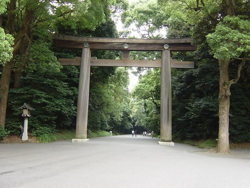

El sintoismo (Shinto)
El sintoismo es una religión originaria de Japón. Al contrario que otras religiones mayoritarias el sintoismo no tiene libros sagrados como la biblia en el cristianismo ni tampoco tiene un fundador.
El sintoismo se basa en la adoración a los dioses Kami
, estos dioses se basan en los fenómenos como la lluvia, el viento.. en conceptos como la misericordia, la fertilidad.. o en los astros como la luna o el sol.
Cuando las personas mueren también se convierten en Kami
y son venerados por su familia. El kami mas importante del sintoismo es Amaterasu
el dios del sol.
Al contrario que otras religiones en el sintoismo no hay absolutismos. Nada es absolutamente correcto o malo. La religión sintoista es una fe optimista que dice que toda persona es fundamentalmente buena y que la
maldad esta causada por la influencia de los malos espíritus.
Los templos Sintoistas están dedicados a un kami especifico.En las entradas a los templos siempre hay unos Torii en las entradas que representan una entrada para los dioses en los que se pasa del mundo finito de los mortales al mundo infinito de los kami.
